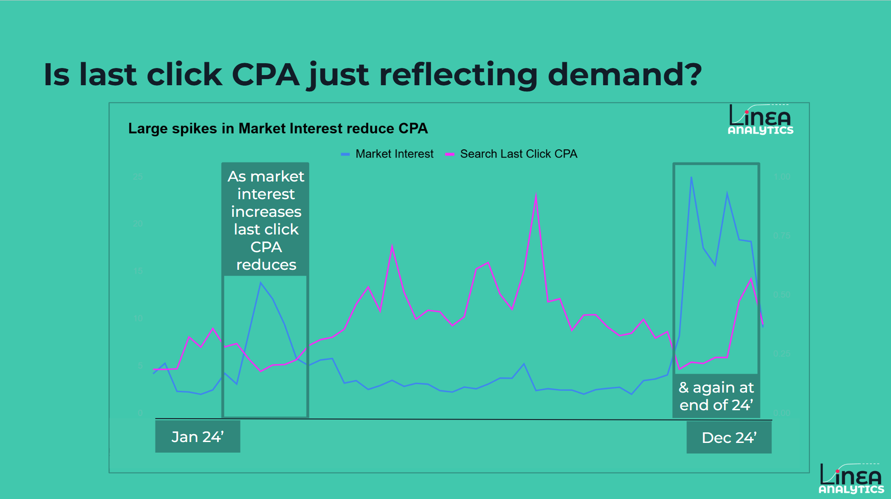
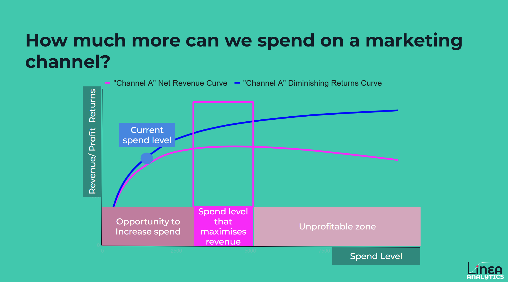

Picture this: It’s the Monday after Black Friday. Your reporting is in the green, showing that your cost-per-acquisition (CPA) miraculously dropped from £20 to £10 overnight. The performance team claims they’ve suddenly cracked the creative code or engineered a miracle.
But let’s pause for a second. Did your marketing suddenly become twice as good, or were there simply thousands of highly motivated, high-intent consumers already in the market to purchase?
Too often, brands confuse purchase behaviour with marketing impact. They award credit to whichever digital paid search query or advert that happened to be clicked last, entirely ignoring any brand building or upper funnel that manufactured that intent over the preceding six months.
In the UK market, where Google and Meta capture a staggering 61% of total advertising spend, this attribution trap has caused massive budget distortion. Because last-click systems reward demand capture rather than demand creation, brands consistently over-invest in lower-funnel channels while starving their upper-funnel engines.
This is exactly why a growing majority of UK marketers have abandoned pure digital attribution - in favour of incremental focused measurement. In my recent experience I have seen that Marketing Mix Modelling (MMM) is experiencing a massive growth in uptake, with brands of all sizes looking to build better marketing measurement.
A quick definition, in marketing terms incrementality represents the true business growth that occurred exclusively because a specific marketing activity took place. It answers the ultimate question: If I turn off this advert tomorrow, how many sales will I actually lose?
Your last click attribution only reports when a customer purchases if seeing an advert not if the advert drove the sale. That's where approaches like Econometrics (MMM) become important.

To capture true incrementality, marketers turn to econometrics—frequently referred to in our space as Marketing Mix Modelling (MMM).
Marketers use econometrics because it takes a completely holistic view of the business landscape. An econometric model uses historical time-series data to isolate and quantify every moving part driving your key business KPIs (such as sales, store traffic, or web conversions). At Linea we control for all other factors such as seasonality, promotions or price changes. The aim of this is so that the Media impact is reported over and above wider sales drivers. In practice this means that if your sales spiked during a heatwave, a proper econometric model won’t let your paid social agency claim credit for the sun!
A product does not exist in a marketing vacuum; its volume is deeply dictated by its price tag and promotional schedule. One of the greatest limitations of digital attribution is its complete blindness to pricing mechanics.
Our Econometrics uncovers the critical synergy between your media spend and your commercial pricing strategy. For example, when you run a significant price promotion, how much harder does your television or Meta ad spend work? Conversely, does your brand-equity media spend help insulate your product against competitor price drops, lowering your consumers' price sensitivity? Econometric modelling establishes these cross-elasticities, enabling commercial teams to coordinate advertising flights directly alongside promotional price drops to unlock maximum profitability rather than accidentally compounding margin loss.
If your brand invests in television, radio, print, or out-of-home (OOH) billboards, digital tracking is completely useless. They cannot drop a cookie on an individual driving past a physical advert on the motorway.
Econometrics evaluates all marketing channels on a perfectly level playing field. Because it relies on macro-level spend and volume data over time rather than individual user-level stitching, it successfully measures the incremental payback of offline media alongside digital performance channels. This prevents your digital channels from taking credit for the heavy lifting done by broad-reach media levers.
Experienced marketers know that an impactful campaign leaves an impact. The consumer who sees your video asset today might not buy today, next week, or even next month; instead, that message builds brand equity that decays gradually over time.
Econometrics accounts for this through the calculation of Adstock, also known as the "memory effect". Rather than assuming an ad’s impact vanishes instantly the moment the budget stops, advanced models apply decay to map out precisely how long a marketing campaign continues to yield returns. This gives finance and marketing teams the data required to validate upper-funnel, brand-building investments that pay off over quarters rather than days.
Every channel eventually suffers from diminishing returns. As you pump more money into a single channel, your ads repeatedly hit the same audience (increasing frequency) or scale out into less relevant consumer pools (decreasing efficiency), causing your customer acquisition costs (CAC) to climb.
Econometrics constructs precise diminishing returns curves for each unique channel. By looking at these curves, you can identify exactly where your current spend sits relative to the point of peak revenue efficiency. More importantly, it maps out the exact boundaries of your "unprofitable zone" - the point where spending an additional £1 will return less than £1 in revenue.

For years, the loudest complaint about econometrics was that it was a slow, retrospective measurement approach. Brands would hand over two+ years of data to a legacy consultancy, wait four months, and receive a massive deck of historical slides explaining what worked last summer. By the time the insights arrived, the market had completely moved on.
In 2026 measurement has shifted. Econometric modelling has been revitalised by technology, making it faster, highly transparent, and considerably more accessible for brands of all sizes:
With incrementality now a must have, UK brands are embracing econometrics. Moving aggressively away from outdated measurement methodologies and towards modern, sophisticated econometrics. At Linea Analytics, we are proudly at the forefront of this measurement revolution. We’ve re-engineered the process to remove the historic friction points, delivering an automated, Always-on MMM platform built specifically for fast, transparent, and action focused measurement.
Have any project on mind?
For immediate support: